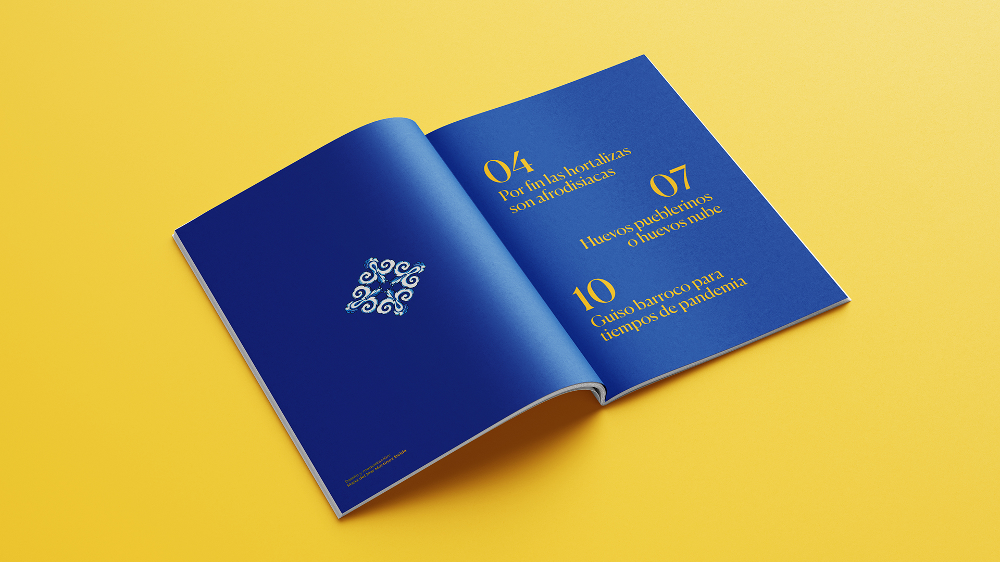

GASTROLOGÍA
Reflexiones y recetas
Diseño editorial de la revista Gastrología: reflexiones y recetas.
El contenido de la revista consta de varios artículos escritos por Ramón J.Soria para la plataforma Contextos, en los cuales el autor trata, a partir de diferentes recetas, los problemas sociales y políticos que afectan a nuestra sociedad.
Año 2021


"Por fin las hortalizas son afrodisiacas."